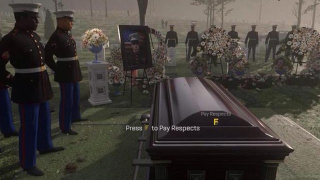
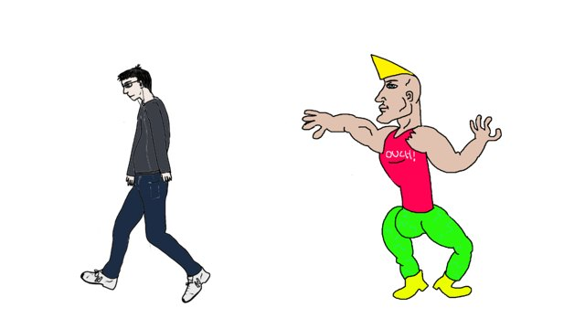

failure is a feeling
Errors are values an agent can look at. chad tries, virgin catches, F pays respects. The error is in L, because you take the L.
chad {
such build = yolo shell("make build")
based build.code == 0, "build failed"
yolo shell("make deploy")
shipped = based
grind until healthy(url) max 5 { touchgrass 1s }
} virgin {
doge "deploy failed:", L.message
tfw shipped { yolo shell("make rollback") }
feelsbad "deploy failed: {L.message}"
} F {
thisisfine { yolo shell("make cleanup") }
}
 x copium y
x copium y
Use y when x fails or is loss. fetch(url) copium "", apu "ok?" copium "no", r.key copium 0. The one-line try.
 thisisfine { }
thisisfine { }
Errors inside are logged and ignored. For cleanup and best-effort steps, never for the main path.

grind ... max NEvery loop has a cap. Hit it and you get a GrindCap error, not an agent that spins until the budget is gone.
